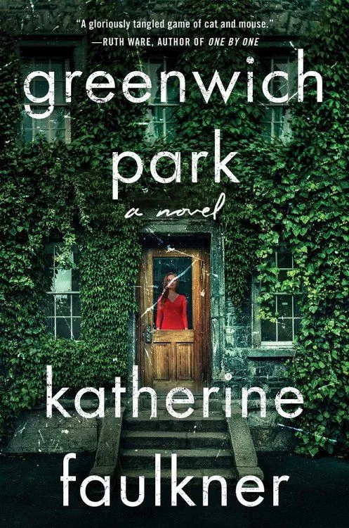
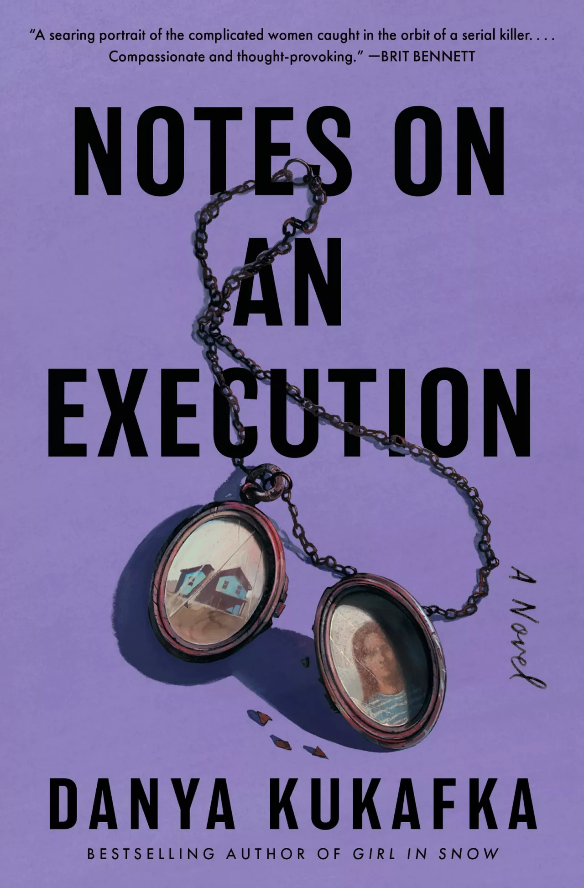
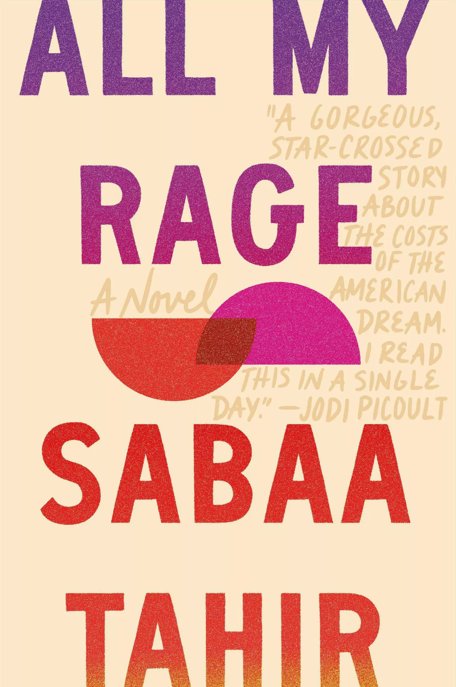
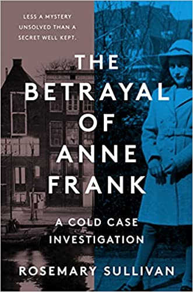
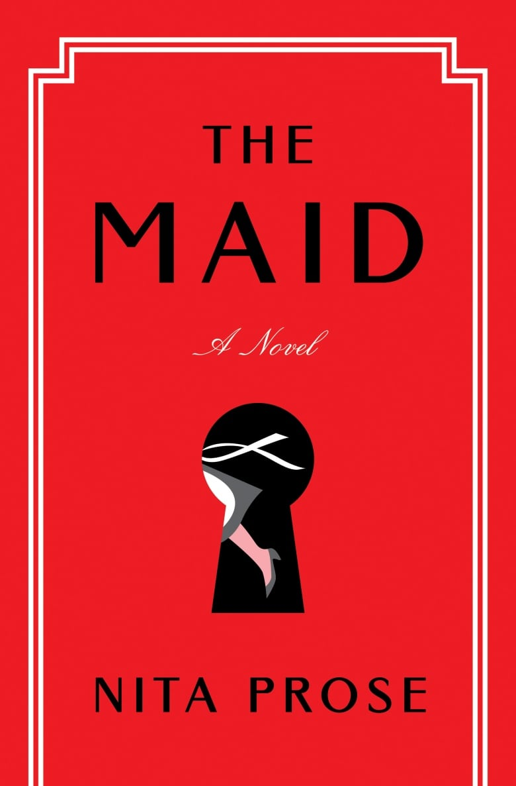
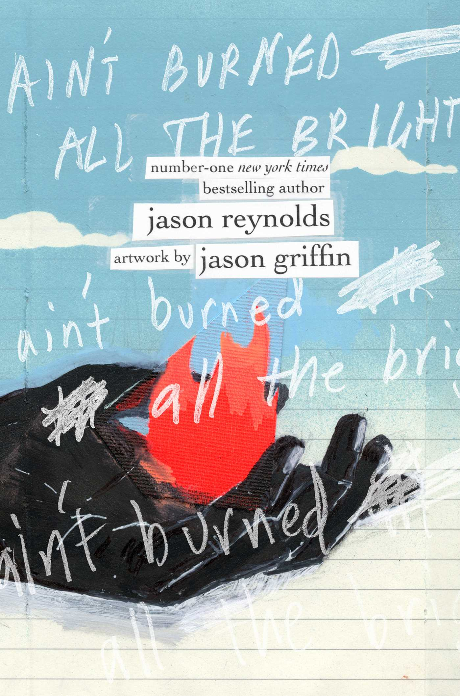
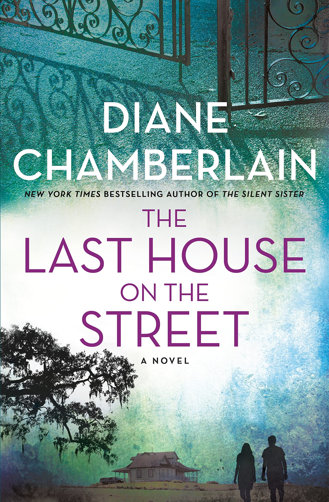
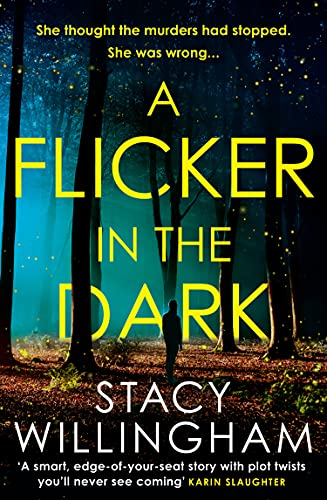

Reminders of Him by Colleen Hoover
Description: A troubled young mother yearns for a shot at redemption in this heartbreaking yet hopeful story from #1 New York Times bestselling author Colleen Hoover.
Rating: 4.7/5
Genre: Romance/Contemporary

Greenwich Park by Katherine Faulkner
Description: A twisty, whip-smart debut thriller, as electrifying as the #1 New York Times bestseller The Girl on the Train, about impending motherhood, unreliable friendship, and the high price of keeping secrets.
Rating: 4/5
Genre: Thriller

Notes on an Execution by Danya Kukafka
Description: A gripping and atmospheric work of literary suspense that deconstructs the story of a serial killer on death row, told primarily through the eyes of the women in his life—from the bestselling author of Girl in Snow.
Rating: 4.4/5
Genre: Thriller

All My Rage by Sabaa Tahir
Description: From #1 New York Times bestselling author Sabaa Tahir comes a brilliant, unforgettable, and heart-wrenching contemporary YA novel about family and forgiveness, love and loss, in a sweeping story that crosses generations and continents.
Rating: 4.8/5
Genre: Contemporary/Young Adult

The Betrayal of Anne Frank by Rosemary Sullivan
Description: Using new technology and recently discovered documents, an international team—led by an obsessed former FBI agent—has finally solved the mystery that has haunted generations since World War II: Who betrayed Anne Frank and her family? And why?
Rating: 4.7/5
Genre: Nonfiction/History

The Maid by Nita Prose
Description: A Clue-like, locked-room mystery and a heartwarming journey of the spirit, The Maid explores what it means to be the same as everyone else and yet entirely different—and reveals that all mysteries can be solved through connection to the human heart.
Rating: 4.1/5
Genre: Mystery

To Paradise by Hanya Yanagihara
Description: From the author of the classic A Little Life, a bold, brilliant novel spanning three centuries and three different versions of the American experiment, about lovers, family, loss and the elusive promise of utopia.
Rating: 3.9/5
Genre: Historical Fiction
Ain't Burned All the Bright by Jason Reynolds
Description: Prepare yourself for something unlike anything: A smash-up of art and text for teens that viscerally captures what it is to be Black. In America. Right Now. Written by #1 New York Times bestselling and award-winning author Jason Reynolds.
Rating: 4.7/5
Genre: Poetry

The Last House on the Street by Diane Chamberlain
Description: From bestselling author Diane Chamberlain comes an irresistible new novel that perfectly interweaves history, mystery, and social justice.
Rating: 4.4/5
Genre: Historical Fiction

A Flicker in the Dark by Stacy Willingham
Description: In a debut novel that has already been optioned for a limited series by actress Emma Stone and sold to a dozen countries around the world, Stacy Willingham has created an unforgettable character in a spellbinding thriller that will appeal equally to fans of Gillian Flynn and Karin Slaughter.
Rating: 4.2/5
Genre: Thriller/Mystery
